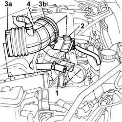

1048A48 HOSE BETWEEN RESONATOR AND THROTTLE CASING - R.R.
- Path
- Procedures > 10 ENGINE > 1048 ENGINE AIR SUPPLY CIRCUIT > 1048A VACUUM AIR CIRCUIT > 1048A48 HOSE BETWEEN RESONATOR AND THROTTLE CASING - R.R.
- Kind
- repair procedure (removal / refitting; the operation number is the code)
- Applies to
- engines: 2.0 TB, 2.4 20V, 3.0 V6, 3.2 V6; all production periods
- Interactive page
- https://sloeber94.github.io/elrnDB-lThss/en/#/93498
Applies to: engines: 2.4 20V; all production periods
 Removing
Removing
 Refitting
Refitting1. Disconnect the oil vapour recovery pipe from the hose.
2. Release the dashboard cables/engine cables coupling from the mounting bracket.
3. Remove the band (3a) connected to the resonator and the band (3b) connected to the throttle casing.
4. Remove the hose between the resonator and the throttle casing.

Applies to: engines: 2.4 20V; all production periods
Refitting
Removing- Position the hose between the resonator and the throttle casing.
- Fasten the hose using the bands.
- Secure the oil vapour recovery pipe to the hose.
- Attach the dashboard cables/engine cables coupling to the mounting bracket.
Applies to: engines: 3.0 V6, 3.2 V6; all production periods
- Procedure not yet available
Topics that link to this page (15)
- 1008A43 Power unit RIGID MOUNT - AUTOMATIC GEARBOX side - R&R
- 1056B14 THROTTLE CASING - R.R.
- 1056B87 INJECTION/IGNITION CONTROL UNIT MOUNTING - R.R.
- 1056B90 SYSTEM CABLE LOOM - R.R.
- 1072B10 INTAKE MANIFOLD - R.R. and Replace gasket
- 1072B54 HOSES CONNECTING AIR CHAMBER TO INTAKE MANIFOLD(S) - R.R.
- 1072D50 DEVICE (V.I.S.) with adjustable air ducts - R.R.
- 1088D36 CONNECTOR ON CRANKCASE FOR CYLINDER HEAD/CRANKCASE WATER CIRCUIT HOSE WITH THERMOSTAT CLOSED - R.R.
- 1088D38 CYLINDER HEAD/CRANKCASE WATER CIRCUIT HOSE WITH THERMOSTAT CLOSED - R.R.
- 2130A70 Rubber hose with built in flexible pipe for directing coolant to automatic transmission oil heat exchanger
- 2135B58 ELECTRONIC AUTOMATIC TRANSMISSION system WIRING - R.R.
- 3340B62 RIGID PIPE (one), left or right, from hydraulic control unit to rear brakes - R.R.
- 5510C14 Ignition COILS - R.R.
- 5510C45 DETONATION SENSOR (one- remaining) R.R. after Op. 5510C44
- 5510D10 SPARK PLUGS - R.R.